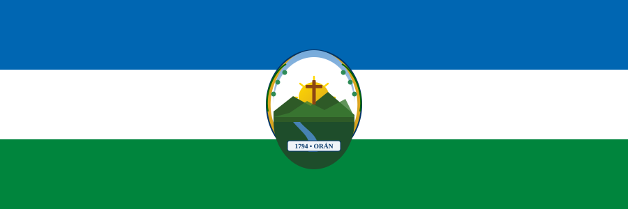

Facultad Regional Orán • UNSa
G
GOIMET
Grupo Oranense de Investigación en Modelización, Educación Matemática y Tecnologías
🏛️ Res. N.° 083/2026-CCI — UNSa
oran.unsa.edu.ar / goimet / inicio.html
Entorno Institucional de Investigación